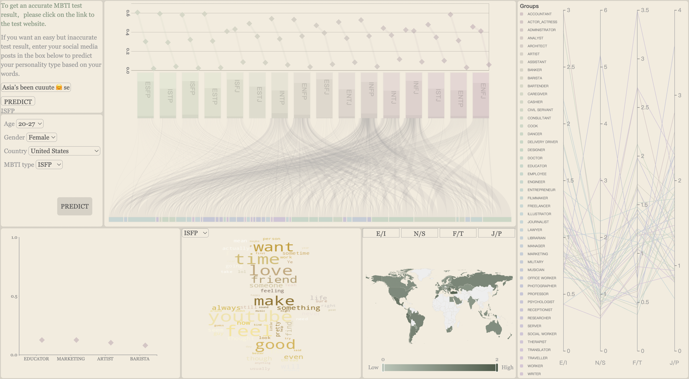
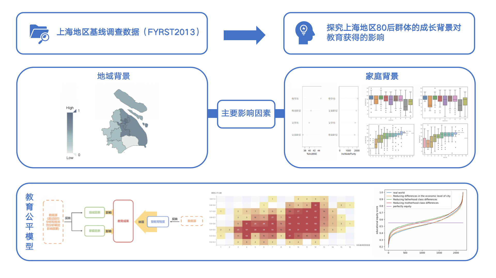
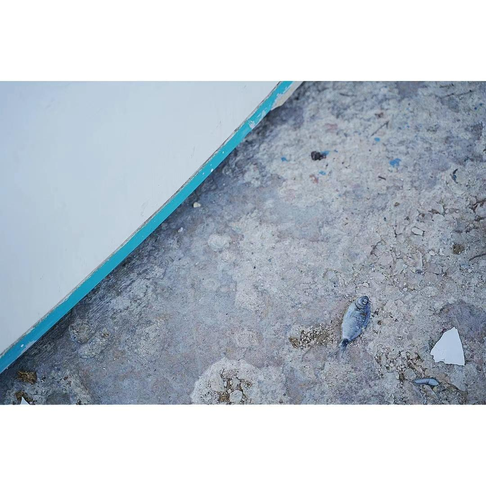
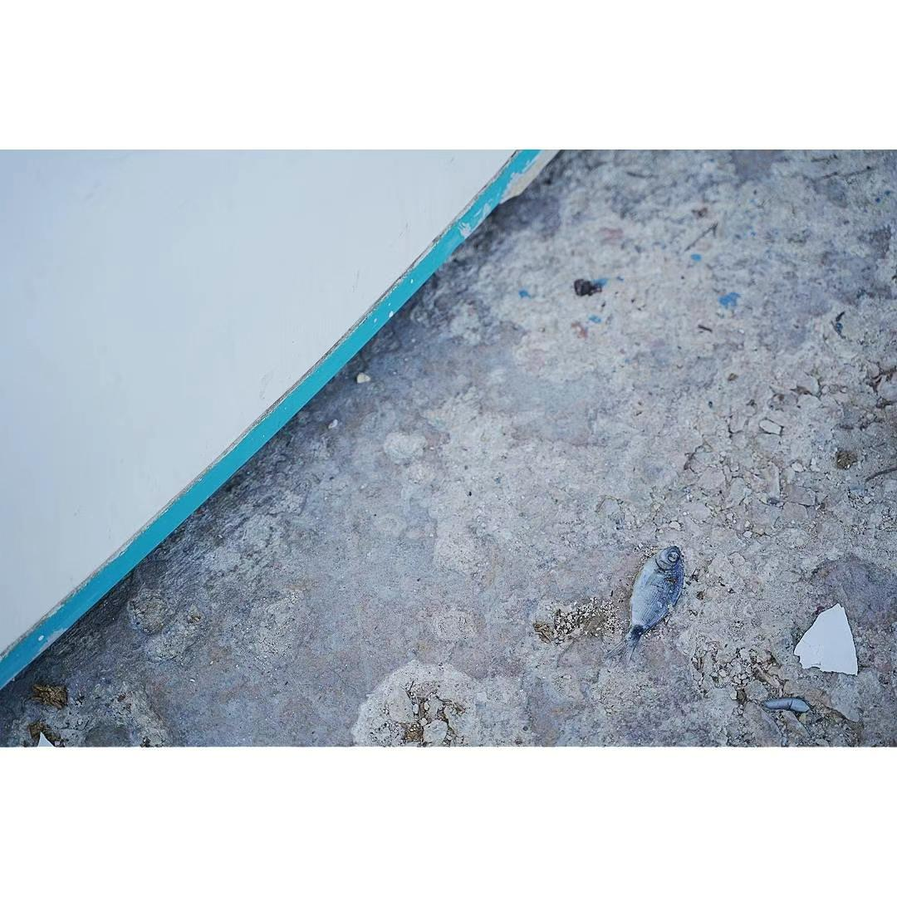

Yutong Yang 杨雨彤
Shanghai Jiao Tong University
flora20@sjtu.edu.cn
Intro
Hi! I am a second-year master student in the Data Intelligence Visual Analytics Team at Shanghai Jiao Tong University
and also a visiting student in PKU Visualization and Visual Analytics Group at Peking University, supervised by Prof. Xiaoju Dong and Prof. Xiaoru Yuan.
My research interest lies in visualization and data analysis for humanities and social sciences. I’m passionate about using technology and creativity to delve into the humanities.
It’s a pursuit fueled by a deep sense of empathy and a commitment to fairness.
For me, an ideal work, even if it's a small force, should be truly valuable in enhancing mutual understanding and inclusivity among different societal groups.
This might involve exploring individual differences impacting communication, revealing diverse life situations and perceptions,
uncovering and presenting inequalities, or advancing universal access to knowledge.
Additionally, I am interested in human-AI teaming and expect to conduct research relevant to this field.
I’m fascinated with the potential power of AI and look forward to exploring how human imagination can collaborate with it.
I enjoy reading, thinking, creating and also chatting with GPT. ☺️
News
🌱 [2024/01] Paper accepted by PacificVis 2024.
Conference EmoGeoCity: Interactive Visual Exploration of City’s Historical and Cultural Evolution Based on Emotional Geography
Yutong Yang, Yinuo Liu, Qishuo Bai, Tianyi Zhou, Ziduo Ye, Xiaoju Dong
To appear at IEEE PacificVis 2024.
EmoGeoCity is a visual analytics system to study a city's cultural and historical evolution, connecting multidimensional data with emotion.
Storytelling City Pulse: Global Metro Line Development History
Xinyue Chen, Yixuan Zhang, Yutong Yang, Jing Chen, Xiaoru Yuan, Weiping Chen, Rebecca Ruige Xu
IEEE PacificVis 2024 Visual Data Storytelling Contest.
We tell the story about the development of metro by abstracting the city as a square, the metro route as a line, and using the width of the
lines to represent the coverage of the routes.
[System]

Conference MBTIviz: A Visualization System for Research on Psycho-Demographics and Personality
Yutong Yang, Xiaoju Dong, Xuefei Tian, Yanling Zhang, Meng Zhou
International Conference of Pioneering Computer Scientists, Engineers and Educators, 2023.
MBTIviz is a system that visualizes the relationship between personality and demographic factors.
It’s used in the study to calculate the distribution of age, gender, and occupation for each personality type,
and explore the correlation between personality, occupation, and nationality.
[Paper]

Poster 成长背景对教育获得的影响——以上海地区80后群体为例 (The Influence of Growth Background on Educational Attainment - An Example of Post-80s Group in Shanghai)
Yutong Yang, Yinuo Liu, Shengyi Han, Yunkang Chang, Yiwei Gong, Xiaoju Dong
ChinaVis 2023 poster.
We investigated the impact of the growth background (including personal characteristics, region and family background)
of the post-80s generation in Shanghai on educational attainment from the perspective of cultural reproduction, based on the “Shanghai Baseline Survey Data (FYRST2013)”.
[Poster][Description]
Research on the cultural adaptation of foreign teachers in Chinese universities
2022 Undergraduate thesis, a French research project supervised by Humanities Prof. Yi Ren.
Investigated and analyzed cultural adaptation among French teachers in a Chinese university through quantitative methods, identifying significant correlations with factors like living environment and teaching adaptation.
Conducted semi-structured interviews with six French teachers from various backgrounds to explore specific challenges and solutions.
[Paper]
Design and Prototype Development of Health Management Application Software for College Students
EDUCATION
Shanghai Jiao Tong University
Shanghai, China
Master of Information Engineering
[Expected]Sep. 2022 – Mar. 2025
Shanghai Jiao Tong University
Shanghai, China
Bachelor of French, Minor in Information Engineering
Sep. 2018 – June 2022
RESEARCH EXPERIENCE
Data Intelligence Visual Analytics Team
Sep. 2021 – Present
Shanghai Jiao Tong University
Shanghai, China
- Proposed EmoGeoCity, a visual analytics system to study a city’s cultural and historical evolution based on
emotional geography.
- Team leader of Huiyuan competition (first prize). Studied the impact of the growth background of the post-80s
generation in Shanghai on educational attainment through data analysis.
- Proposed MBTIviz, a visualization system that enables comprehensive and accessible analysis of the correlation
between personality and demographic variables such as occupation and nationality.
PKU International Visualization Summer School
July 2023 – Jan. 2024
Peking University
Beijing, China
- Proposed the design idea of abstracting the city as a square, the metro route as a line, and using the width of the
lines to represent the coverage of the routes.
- Developed the system of Global Metro Line Development History.
PKU Visualization and Visual Analytics Group
Nov. 2022 – Present
Peking University
Beijing, China
- Developed a labeling system for extracting speakers and listeners in Ming and Qing novels.
PUBLICATIONS
[1] Y. Yang, Y. Liu, Q. Bai, T. Zhou, Z. Ye and X. Dong, “EmoGeoCity: Interactive Visual Exploration of City’s
Historical and Cultural Evolution Based on Emotional Geography,” in IEEE 17th Pacific Visualization Symposium
(PacificVis), 2024
[2] Y. Yang, X. Dong, X. Tian, Y. Zhang and M. Zhou. “MBTIviz: A Visualization System for Research on
Psycho-Demographics and Personality,” in International Conference of Pioneering Computer Scientists, Engineers and
Educators, 2023.
PROJECTS
Growth Impact on Education: Post-80s in Shanghai | Python, HTML/CSS/JS
Nov. 2022 – Apr. 2023
- Conducted regression analysis on educational attainment and educational background, identifying strongly
correlated influencing factors.
- Explored regional and family impacts on education and proposed recommendations through qualitative analysis.
- Won first prize in the Huiyuan national data competition and awarded with a total prize money of ¥10000.
Research on the cultural adaptation of foreign teachers in Chinese universities
Dec. 2021 -- June 2022
- Undergraduate thesis, a French research project supervised by Humanities Prof. Yi Ren.
- Investigated and analyzed cultural adaptation among French teachers in a Chinese university through quantitative methods, identifying significant correlations with factors like living environment and teaching adaptation.
- Conducted semi-structured interviews with six French teachers from various backgrounds to explore specific challenges and solutions.
TECHNICAL SKILLS
Languages: Python, HTML/CSS, JavaScript, SQL
Technologies/Frameworks: D3.js, Flask, Tornado, Django, Vue, torch, transformers, openai, sklearn, statsmodels


 
